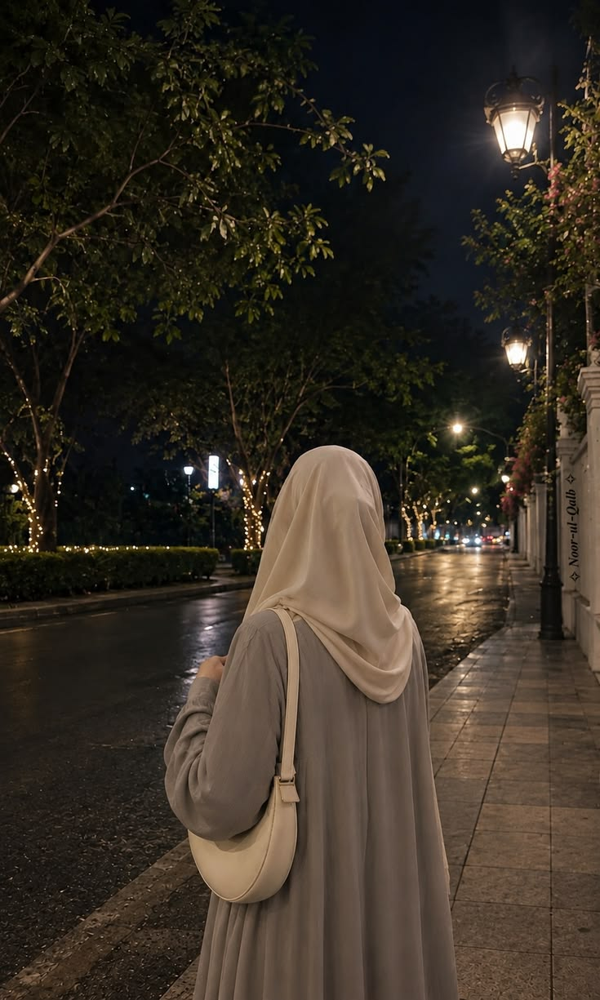

Research & Psychology
Research experience in developmental psychology, including study development, visual research materials, behavioural coding, and communicating findings.
Psychology · Communication · Creative Media
I'm Farah Ismail, a Psychology & CCIT student at the University of Toronto Mississauga working across research, communications, design, media, and education.
Portfolio
A collection of research, design, visual media, and writing spanning my academic and creative work.
Research experience in developmental psychology, including study development, visual research materials, behavioural coding, and communicating findings.

Posters, digital campaigns, branded social media content, event marketing, and visual communications created across student organizations and campus initiatives.

Photography, short-form video, event coverage, editing, visual storytelling, and content created for digital audiences.

A curated collection of poetry and creative writing exploring memory, identity, relationships, and the quieter details of everyday life.
Experience
University of Toronto Mississauga Students' Union
Develop social content, campaign concepts, graphics, short-form video, event coverage, and digital communications for the student union and campus initiatives.
UTM Muslim Students' Association
Support organizational leadership, executive coordination, communications, programming, and long-term planning for a campus-wide student organization.
Al-Toufic Arabic School
Teach introductory Arabic through age-appropriate lessons, activities, visual materials, and classroom engagement.
UTM Muslim Students' Association
Led visual communications and social media marketing for the MSA, developing campaign concepts, promotional content, event coverage, and branded digital media while coordinating with the executive team and marketing department.

About
I'm a Psychology and Communication, Culture, Information & Technology student at the University of Toronto Mississauga. My work sits somewhere between research and creativity: I enjoy understanding people, translating complicated information into something clear, and creating media that feels thoughtful rather than noisy.
My experience has taken me through developmental psychology research, student leadership, social media and communications, graphic design, photography and video, education, and writing. The common thread is simple: I like making ideas easier to understand and more meaningful to the people they are meant for.
Contact
Research, communications, creative work, collaborations, or something interesting in between.